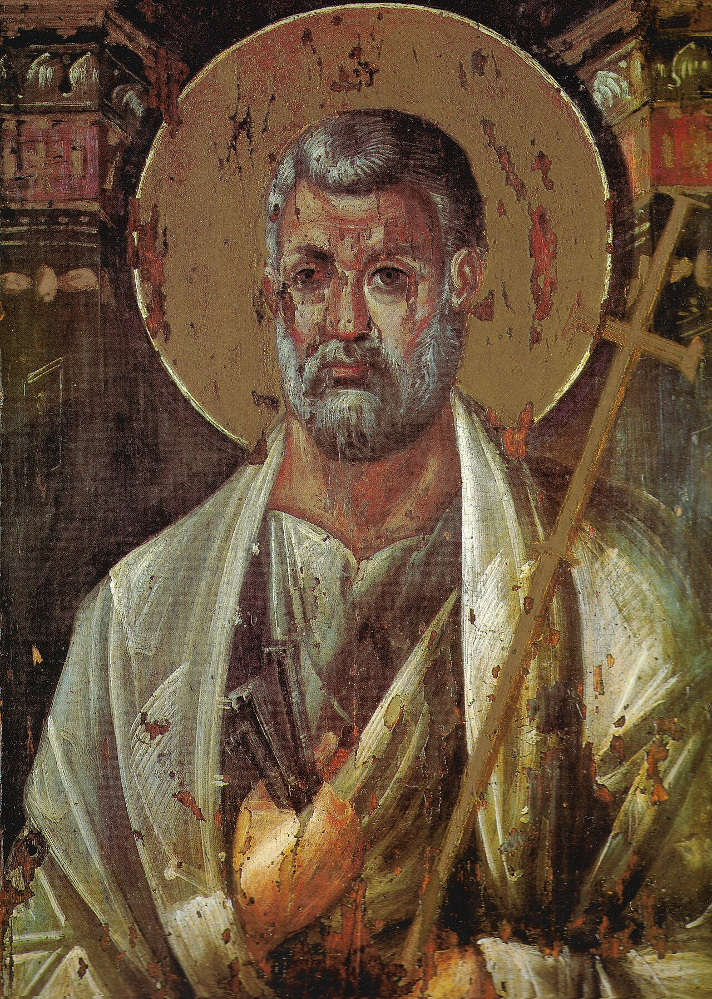

The Gospel of Simon Peter

Simon Peter, originally named Simon, was born in Bethsaida, a fishing village in Galilee. He later lived in Capernaum and worked as a fisherman with his brother Andrew. Andrew was the one who first brought him to Jesus, and Jesus gave Simon the new name “Peter” (from the Greek Petros, meaning “rock”). This name symbolized the leadership role Peter would eventually take in the early church.
Peter quickly became one of Jesus closest disciples, part of the inner circle along with James and John. He witnessed major events such as the Transfiguration, the raising of Jairus daughter, and Jesus walking on water an event where Peter himself briefly walked on the water toward Jesus before sinking due to fear. Peter was bold, outspoken, and deeply loyal, although imperfect. During Jesus arrest, Peter denied knowing Him three times, just as Jesus predicted. But after the resurrection, Jesus restored Peter by asking three times, “Do you love me?” and commissioning him to “feed my sheep,” confirming his leadership. After Jesus ascended into heaven, Peter became the main leader of the early Christian church. He boldly preached on the Day of Pentecost, leading about 3,000 people to Christ in a single day. He performed miracles, healed the sick, confronted religious leaders, and traveled across regions such as Judea, Samaria, Joppa, Caesarea, and possibly Rome. One of his major breakthroughs was receiving a vision from God showing that the gospel was also for Gentiles (non-Jews). This led him to share the message with the Roman centurion Cornelius, marking a turning point in Christian history. Peter later wrote 1 Peter and 2 Peter, letters that encouraged believers to stay strong during persecution. According to early Christian tradition, Peter eventually went to Rome, where he was martyred during Emperor Nero rule, reportedly crucified upside down because he felt unworthy to die like Jesus. Today, Simon Peter is remembered as a man of strong faith, human weakness, and incredible transformation proof that God can turn an ordinary person into a powerful leader for His kingdom.
Key Facts About Simon Peter
- He was born in Bethsaida in Galilee.
- He was a fisherman before following Jesus.
- His birth name was Simon;Jesus renamed him Peter("rock").
About Simon Peter
- He healed the sick and even raised Dorcas from the dead.
- He preached boldly on the Day of Pentecost, leading 3,000 people conversions.
- He walked on water towards Jesus.
- He wrote 1peter and 2peter in the New Testament.